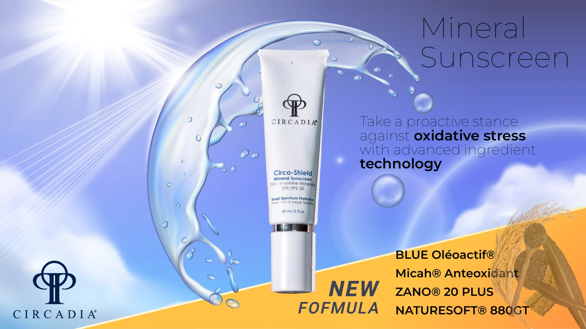
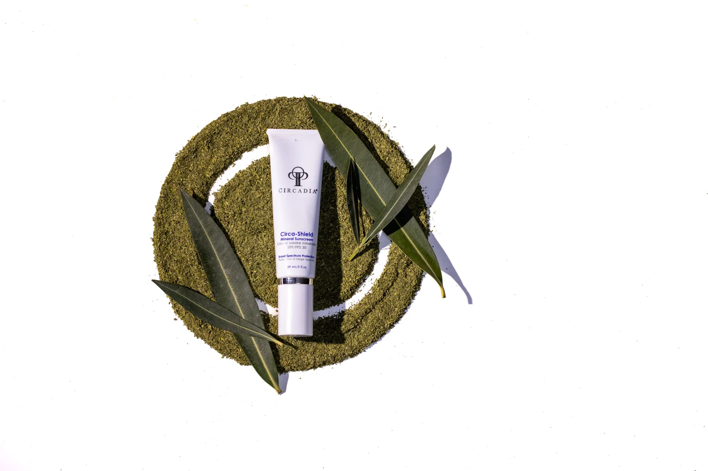

BRAND APPLICATION STUDY
Circadia
A product story, brought into focus.
Campaign composition · Product presentation · Brand application
Product-led advertising layout · Image composition study · Typography and information hierarchy · PDF design artwork

Enlarge image
Enlarge imageThe context
This design exploration applies the Circadia visual identity to a mineral sunscreen product presentation. The composition brings product imagery, light, color, and supporting copy into one hierarchy.
My contribution
The selected work demonstrates campaign layout and product composition within an existing brand language. It is presented as a design exploration rather than evidence of a commissioned campaign or commercial launch.
Making the work useful
A brand application has to balance recognition with clarity: the product, message, ingredients, and brand each need a deliberate place in the layout. The supporting composition study makes the image-building process visible.
Design exploration using existing Circadia brand and product assets. The source brand guide and stock/mockup packages are reference materials and are not offered as original identity work.